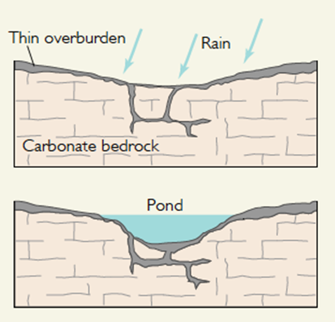
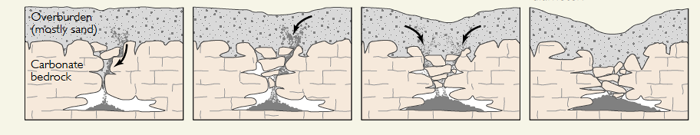
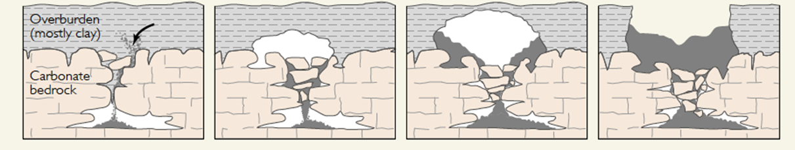
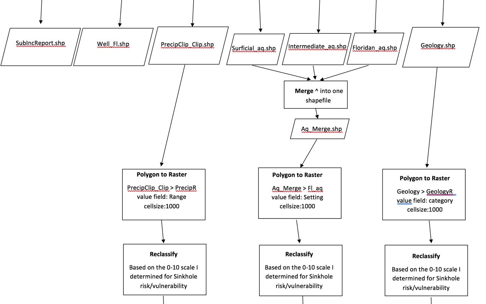
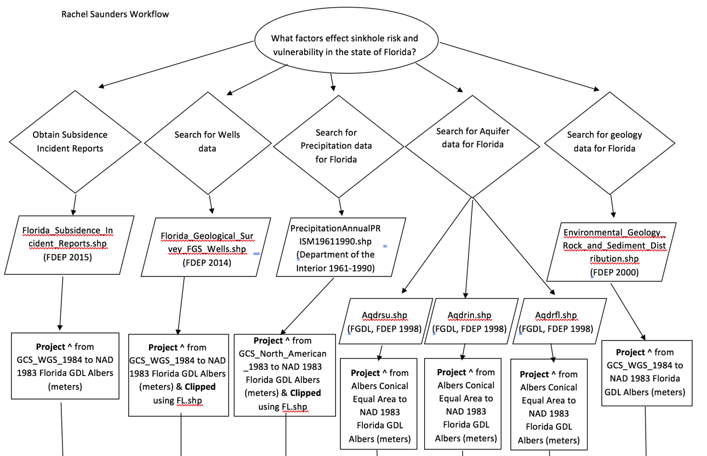
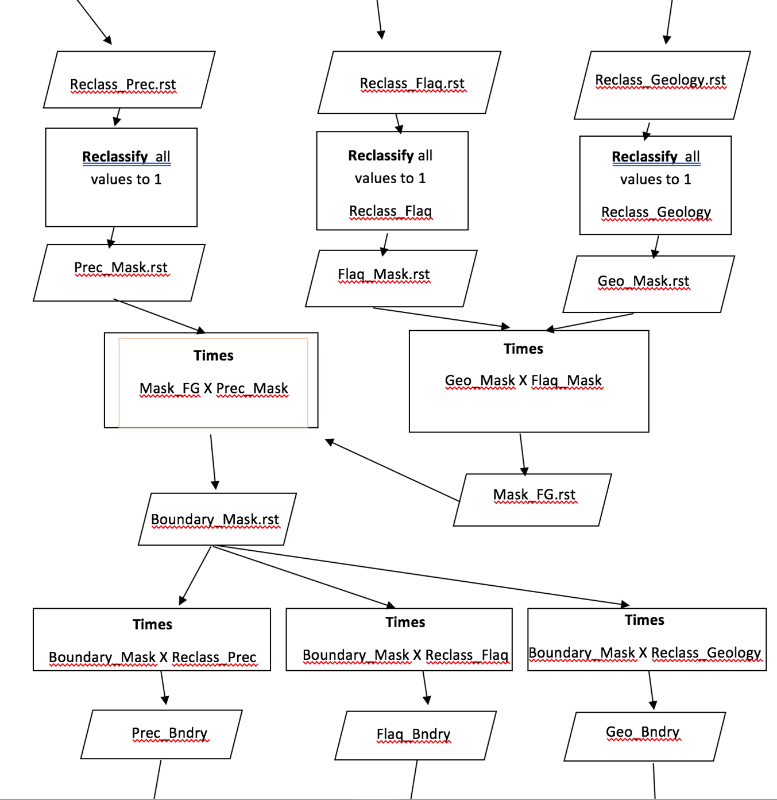
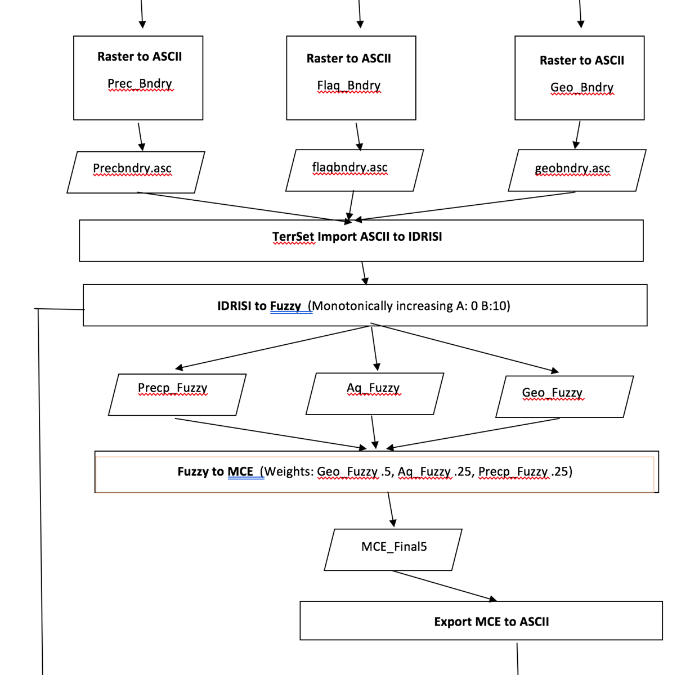
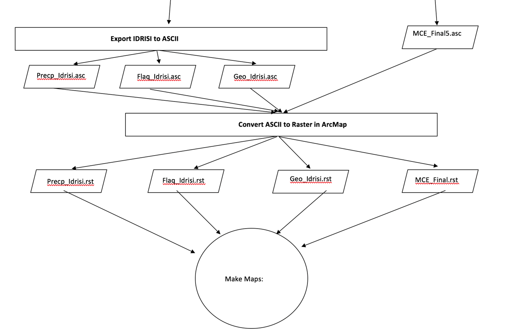
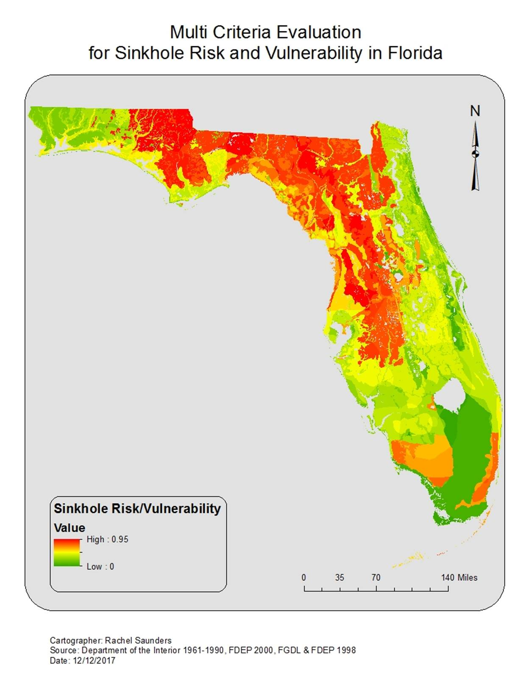
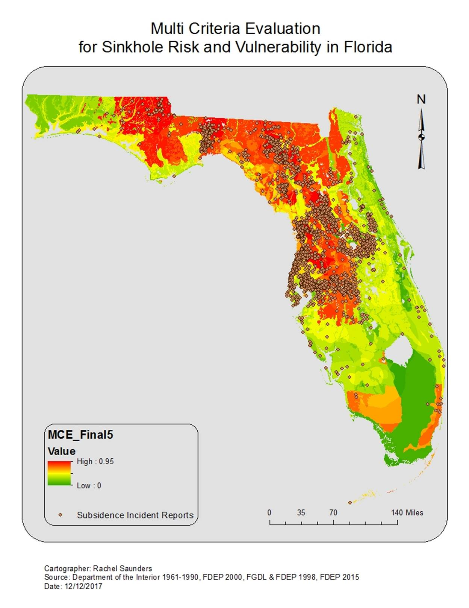

Florida Sinkhole Risk and Vulnerability
Multi-Criteria Evaluation Model
Modeled Using TerrSet
Landscape Ecology
December 13, 2017
By
Rachel Saunders
Introduction
Sinkholes are one of the most
terrifying natural disasters, and there are no current prediction models or
methods to pinpoint areas of risk and vulnerability. Other natural disasters,
like hurricanes and earthquakes have developed tools that predict, forecast,
and warn the public about future events. The ability to make these predictions
are important to both public and environmental health. It creates awareness and
preparedness, as well as a better understanding of how our environment and
certain factors effect disasters. This paper and subsequent model will attempt
to answer this question; where in Florida are most vulnerable or at risk of
sinkhole formations?
The geology of Florida is the most
important factor to examine when understanding the risk and vulnerability of
sinkholes. Florida is largely made up of a mostly submerged carbonate platform,
with irregular deposits of sand and clay sediments that make up the overburden
(Tihansky 1999). Overburden is the collection of
sediment or rock covering a resource, such as bedrock or limestone. Sand and
Clay deposits vary in composition and thickness throughout the state, and play
an important role in the circulation and quality of ground water (Tihansky 1999).
The development of sinkholes
depends heavily upon limestone dissolution. This is the action of dissolving
limestone or bedrock by weakly acidic water. Limestone dissolution rates are
highly influenced by precipitation rates, because of the reaction between water
and the atmosphere (Tihansky 1999). As water falls
through the atmosphere and drips into the ground it dissolves carbon dioxide in
the air and soil, forming carbonic acid, a weak acid. This acid penetrates
through the overburden contacting and dissolving the bedrock surfaces (Tihansky 1999). Cavities and voids then form as the
limestone or dolomite dissolve into ions of calcium, magnesium, and bicarbonate
(Tihansky 1999). This reaction is found responsible
for the majority of all sinkholes formed in Florida, and helps to determine the
vulnerability of sinkholes.
The overburden that is made up of an
assortment of sediments has a large effect on the risk or danger of sinkholes
formed. There are three different categories of sinkholes that can form.
Dissolution, occurs when there is little to no overburden making limestone or
dolomite at the land surface. A depression in the ground is formed from
rainfall and can create ponds or shallow depressions. This is the most common
type of sinkhole in Florida and are minimally threatening.

(Tihansky 1999)
Cover-subsidence develops gradually.
The overburden layer is mainly made up of permeable sediments and sand. These
granular sediments slowly trickle into the cracks as they are formed, and
create noticeable surface depressions. These sinkholes are also minimally
threatening.

(Tihansky 1999)
Cover-collapse is the most
threatening type of sinkhole. They form abruptly over a period of hours and
cause catastrophic damage. The overburden layer is mainly made up of clay,
which acts as a glue creating a bridge. This continues to decay until it
breaches the surface layer where it then collapses.

(Tihansky 1999)
Aquifers also play an important
part in sinkhole risk and vulnerability. Florida contains three aquifer
systems. The surficial aquifer system is the closest aquifer to the ground
surface, and typically ranges from 25 to 100 ft in thickness consisting of
varying proportions of sand, shell, and clay (Sacks et al. 1996). Sinkholes
commonly occur due to failed deposits in the surficial aquifer that move to
infill underlying cavities (Tihansky 1999). The
intermediate aquifer is present below the surficial aquifer in west-central
Florida and a small part of north-east Florida. This layer impedes the vertical
flow of ground water between the surficial aquifer and the underlying Floridan
aquifer (Tihansky 1999). Presence of the intermediate
layer is a factor in the type and frequency of sinkholes in west-central
Florida (Tihansky 1999). The Floridan aquifer is the
major aquifer for the state of Florida. Discharge and recharge of this overall
system is important to all other systems, and what effects this one creates and
effect in the overall above land composition.
Methods
I began my process by conducting
research on what factors effect sinkhole risk and vulnerability in Florida.
Ultimately, I obtained data on geology, aquifers, precipitation, wells, and
subsidence incident reports. I then made a decision on what program I should
use to make my model based on the data I collected and my desired outcome. I
decided to use TerrSet, because this program allows
me to create a multi-criteria evaluation called MCE. This model uses factors
and weights, that are determined based off of an educated guess of what is most
important, to create a model. My process, from collection to model and then to
map making is displayed in a detailed workflow diagram below. I will highlight
a few major steps in the process.
Reclassifying: I reclassified the three
shapefiles that will be used as factors for sinkhole risk/vulnerability factors
into a 0-10 scale of risk/vulnerability that I determined based off of
research.
Florida
Geology
|
Old Values |
New Values |
|
2 Shelly Sand and Clay |
5 |
|
3 Clayey Sand |
10 at most risk because clay, located in area prone sinkholes |
|
4 Limestone |
9 |
|
5 Gravel and Coarse Sand |
3 |
|
6 Sandy Clay and Clay |
4 |
|
7 Med. Fine Sand and Silt |
6 |
|
7 Shelly Sand and Clay |
6 |
|
8 Peat |
3 |
|
9 Limestone/Dolomite |
8 |
|
11 Shell beds |
2 |
|
13 Dolomite |
7 |
|
99 Water |
1 |
Aquifers
|
Old Value |
New Value |
|
11A |
10 |
|
11B |
8 |
|
11C |
6 |
|
11D |
4 |
Precipitation
|
Old Value |
New Value |
|
32.5 |
4 |
|
42.5 |
5 |
|
50 |
6 |
|
55 |
7 |
|
65 |
8 |
|
70 |
9 |
|
90 |
10 |
|
|
|
Boundary Mask: I created a boundary mask by
reclassifying all of the reclassified data to a value of 1. I then multiplied
this boundary mask by all of the reclassified files in order to ensure they all
had the same columns, rows, and extents. This is important for the MCE.
Fuzzy: I needed to make a Fuzzy from each
of the imported ASCII to IDRISI files, because the IDRISI files contained no
data. This no data confuses the MCE model and will not display useful
information. For each of the IDRISI files being turned into Fuzzy I used
monotonically increasing with a: 0 and b: 10
MCE: The three Fuzzy files were put
into the factors field of the MCE dialogue box and given a weight. Geology .5,
Precipitation .25, and Aquifers .25



Analyzing Results
My initial MCE contained weights of
.34 for geology, .33 for aquifers, and .33 for precipitation. However, after my
class presentation I discovered that this distribution of weights compromised
the accuracy of my MCE. I believe this is because geology is the most important
component when analyzing sinkhole risk and vulnerability, and by weighing it
equally to aquifers and precipitation I lost areas of high vulnerability. This
is most likely due to my aquifer values. I ranked my aquifers based off of
geology displayed in their attribute table. However, this doesnt accurately
portray all of the different types of geology in Florida. Taking this into
account, I went back to TerrSet and performed another
MCE making sure to put geology at a .5 weight, and aquifers and precipitation
at .25 each. The results were more conclusive and gave me the desired outcome,
which displayed higher risk areas for Volusia County.
This map establishes that the most
at risk/vulnerable areas of Florida for sinkhole formations and possible
collapse are Central Florida to West-Central Florida spreading through North
Florida. The low risk/vulnerability areas are areas of water, mainly wetlands.
These areas are still susceptible to sinkhole formations, but are less
risky/vulnerable because of their direct effect on human populations and homes.
Another interesting observation,
made by one of my classmates, pertains to the Miami area on the map. He mentioned
that Miami basically should not exist due to artificially reconstructing their
land. In the MCE, that area is displayed as moderate-to-high risk, and he was
curious as to why it was not high risk. The original Florida geology data
reveals that Miami is mainly (4) limestone. When I reclassified my data, I
determined (4) limestone to be a 9 on the 0-10 scale, and (3) Clayey Sand as
10. This is because overburden that is made up of a majority of clay, as
discussed above, causes catastrophic sinkholes, known as Cover-Collapse.
Limestone, although more susceptible to sinkhole creation, is slightly less
risky in comparison, because you can see the downward erosion occurring over a
period of time allowing for less vulnerability and risk.
Another important point to analyze
about this model is the precipitation data I used. Unfortunately, I could only
obtain precipitation data for the years 1961-1990. This does not accurately
represent the current average rainfall for the state of Florida, which has most
likely increased over the past 27 years. Precipitation is important to the rate
of dissolution.

I then inserted a point shapefile
of subsidence incident reports. These reports are not confirmed sinkholes, but
observed depression in the land surface that are most likely the beginning
signs of sinkhole formation. The reports correspond with the MCE adding support
to the usefulness of the MCE map.

Improvements
My models were created off of three
criteria: geology, aquifers, and precipitation. There are more factors that
would only add to the accuracy and development of this model. However, this
first model is a great starting point for developing a more in-depth analysis
of where sinkholes are projected to form. I would consider doing more research
on aquifers and how they contribute to sinkhole formation, as well as trying to
obtain a dataset of avg. rainfall for more recent years in Florida. Other
criteria that could be added would be a statistical analysis on wells and their
location to sinkholes in Florida. Wells actually add stability to the
surrounding ground because they are always pulling water to the surface
creating a buoyant under layer. However, this also effects areas of recharge,
because they cannot be recharged fast enough and collapse occurs. Obtaining
recharge and discharge data would also be useful to this analysis. Also, finding
out if there is a buffer zone that could be created around wells that would
determine a radius of land that is, in essence, protected from sinkholes
because of the well.
I would also like to add a dataset
of sinkholes that have already formed in Florida. This could potentially
justify the MCE data if the locations correlated with the scale of
risk/vulnerability.
Conclusion
It is important to understand that
models are never absolute or 100% accurate, but are useful. I firmly believe
that this study would be helpful to anyone looking to move to or develop in
Florida. Sinkholes are, for the most part, invisible. When they begin to form,
if it is evident, there are no tools or instruments to predict the depth,
width, or risk. It is not like a hurricane or even an earthquake where we have
instruments to warn us before the fact. Sinkholes are formed from varying
factors that change below the land surface, invisible to the eye. My study can
help in understanding where the most at risk and vulnerable areas of Florida
are to create awareness and preparedness.
References
Tihansky A. B. (1999).Sinkholes,
West-Central Florida A link between surface water and ground water. U.S.
Geological Survey, Tampa, Florida.
Sacks L. A., A. B. Tihansky. (1996). Geochemical and Isotopic Composition of
Ground Water, with Emphasis on Sources of Sulfate, in the Upper Floridan
Aquifer and Intermediate Aquifer System in Southwest Florida. U.S. Geological
Survey.
Shapefile References
Flaq_Idrisi. (1998). Aqdrfl. Florida Geographic Data Library and Florida Department of Environmental Protections. https://www.fgdl.org/metadataexplorer/explorer.jsp
Flaq_Idrisi. (1998). Aqdrin. Florida Geographic Data Library and Florida Department of Environmental Protections. https://www.fgdl.org/metadataexplorer/explorer.jsp
Flaq_Idrisi. (1998). Aqdrsu.
Florida Geographic Data Library and Florida Department of Environmental
Protections. https://www.fgdl.org/metadataexplorer/explorer.jsp
Geo_Idrisi. (2000). Environmental_Geology_Rock_and_Sediment_Distribution. Florida Department of Environmental Protection. http://geodata.dep.state.fl.us/datasets/environmental-geology-rock-and-sediment-distribution?geometry=-97.203%2C24.371%2C-55.389%2C31.169
Precp_Idrisi. (1961-1990). PrecipitationAnnualPRISM19611990. Department of the Interior. https://catalog.data.gov/dataset?tags=rainfall
SubIncReport. (2015). Florida_Subsidence_Incident_Reports. Florida Department of Environmental Protection. http://geodata.dep.state.fl.us/datasets/florida-subsidence-incident-reports?geometry=-99.454%2C20.773%2C-31.954%2C34.358
Wells_Fl. (2014). Florida_Geological_Survey_FGS_Wells. Florida Department of Environmental Protection. http://geodata.dep.state.fl.us/datasets/0f5739c0409e4e9db5c63ab8df6d9e34_0